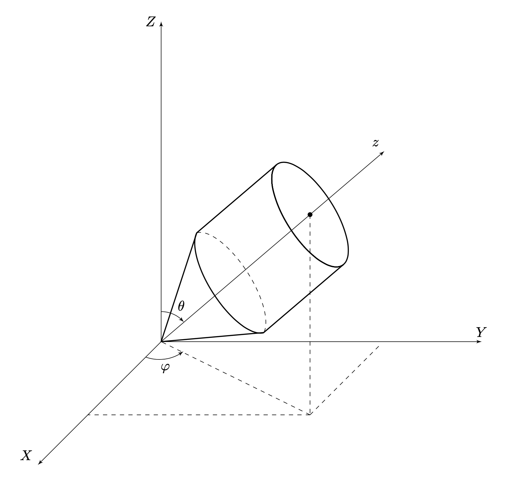

X25 (2025) — English translation
This problem is devoted to the study of the movements of symmetrical tops - rigid bodies with an axis of symmetry. In Part A, the general equations of motion of a rigid body will be obtained; in subsequent parts, the Euler top (which is not affected by external forces) and Lagrange top (moving in a constant gravitational field) will be considered. Let the bottom point of the top $O$, lying on the axis of symmetry, be fixed, and the top can freely rotate around the point $O$ in all directions. The mass of the top is $m$, the distance from $O$ to the center of mass of the top is $l$. To describe the motion, we introduce a fixed coordinate system $OXYZ$.
It is known from mechanics that the motion of an arbitrary rigid body with a fixed point is completely determined by a single vector - angular velocity, which means that the angular momentum and kinetic energy of a rigid body are uniquely expressed through its angular velocity and its geometric characteristics. Let us consider a small fragment of a solid body having a mass $dm$ and a radius vector $\vec{r} = (X, Y, Z)$ relative to the point $O$ in the coordinate system $OXYZ$. Let at the moment under consideration the body rotate with angular velocity $\vec{\Omega} = (\Omega_x, \Omega_y, \Omega_z)$.
For example, the coordinates of the center of mass can be written as $$X_c = \frac{1}{m} \int X dm; \quad Y_c = \frac{1}{m} \int Y dm, \quad Z_c = \frac{1}{m} \int Z dm. $$
В дальнейших пунктах полученные здесь формулы не используются.
Можно показать, что кинетическая энергия твердого тела имеет вид $$ T = \frac{1}{2} \vec{L} \cdot \vec{\Omega}. $$ Используем следующий математический факт. Оказывается, для любого твёрдого тела поворотом осей можно добиться того, что $I_{xy} = I_{yz} = I_{zx} = 0$. В этом случае выражения для $\vec{L}$ и $T$ сильно упрощаются, а $I_{xx}$, $I_{yy}$, $I_{zz}$ называются главными моментами инерции . Для краткости обозначим $⟦ M10⟧$ Однако в этом случае возникает другая сложность: оси оказываются связаны с самим телом, и поэтому являются подвижными. Направим ось $Oz$ вдоль оси симметрии волчка. Выберем оси $Ox$, $Oy$ так, чтобы они вместе с осью $Oz$ образовывали правую тройку. Из соображений симметрии очевидно, что в этом случае оси $Oxyz$ являются главными для волчка.
Используем следующий математический факт. Оказывается, для любого твёрдого тела поворотом осей можно добиться того, что $I_{xy} = I_{yz} = I_{zx} = 0$. В этом случае выражения для $\vec{L}$ и $T$ сильно упрощаются, а $I_{xx}$, $I_{yy}$, $I_ {zz}$ называются главными моментами инерции . Для краткости обозначим
$$I_{xx} = I_x, \qquad I_{yy} = I_y, \qquad I_{zz} = I_z.$$
Однако в этом случае возникает другая сложность: оси оказываются связаны с самим телом, и поэтому являются подвижными.
Направим ось $Oz$ вдоль оси симметрии волчка. Выберем оси $Ox$, $Oy$ так, чтобы они вместе с осью $Oz$ образовывали правую тройку. Из соображений симметрии очевидно, что в этом случае оси $O xyz$ являются главными для волчка.
Пусть $\vec{e}_x$, $\vec{e}_y$, $\vec{e}_z$ – единичные векторы осей $Oxyz$. Пусть в некоторый момент волчок вращается с угловой скоростью $\vec{\omega}$, причём в системе координат $Oxyz$, связанной с волчком, $\vec{\omega} = \omega_x \vec{e}_x + \omega_y \vec{e}_y + \omega_z \vec{e}_z$.
To study rotations, the basic equation of rotational motion is used: $$\dot{\vec{L}} = \vec{M},$$ где $\vec{L}$ – момент импульса системы относительно выбранной неподвижной точки, $\vec{M}$ – суммарный момент внешних сил относительно этой точки. Поскольку оси системы координат $Oxyz$ вращаются с угловой скоростью $\vec{\omega}$, производные единичных векторов подвижной системы координат имеют вид $$\dot{\vec{e}}_x = \vec{\omega} \times \vec{e}_x, \quad \dot{\vec{e}}_y = \vec{\omega} \times \vec{e}_y, \quad \dot{\vec{e}}_z = \vec{\omega} \times \vec{e}_z.$$
From point A6 it follows that the basic equation of dynamics in the moving axes $Oxyz$ has the form $$\begin{cases} I_x\dot{\omega}_x + (I_z-I_y)\omega_y \omega_z = M_x \\ I_y\dot{\omega}_y + (I_x-I_z)\omega_z \omega_x = M_y \\ I_z\dot{\omega}_z + (I_y-I_x)\omega_x \omega_y = M_z \end{cases}$$ Здесь $M_x$, $M_y$, $M_z$ – компоненты внешнего момента $\vec{M}$ в системе координат $Oxyz$. These equations are called dynamic Euler equations and are a very convenient tool for studying the rotation of a rigid body.
In the future, we will be interested in the movement of the center of mass of the top. The position of the top in space can be specified by two angles, similar to the angles in the spherical coordinate system. The angle between the axis $OZ$ and the axis of symmetry of the top $Oz$ will be denoted $\theta$, the angle of rotation of the axis of symmetry of the top around $OZ$ – $\varphi$. In addition, the top can rotate around its own axis of symmetry, which does not affect the position of its center of mass. Thus, the overall motion of the top is a superposition of three rotations: Rotation about the axis of symmetry with a certain angular velocity $\vec{\omega}_s$. The rotation at which the angle $\theta$ changes, the corresponding angular velocity $\vec{\omega}_\theta$ is perpendicular to the axes $OZ$ and $Oz$. Rotation at which the angle $\varphi$ changes, the corresponding angular velocity $\vec{\omega}_\varphi$ is directed along $OZ$. Then the total angular velocity of the top is the sum of these three angular velocities $$ \vec{\omega} = \vec{\omega}_s + \vec{\omega}_\theta + \vec{\omega}_\varphi .$$ Заметим, что в силу симметрии волчка мы можем выбрать оси $Ox$ и $Oy$ в плоскости, перпендикулярной оси симметрии волчка произвольным образом. Воспользуемся этим и направим ось $Ox$ в заданный момент времени в плоскости $OZz$, так, чтобы угол $xOZ⟦M 19⟧$ \vec{\omega} = \vec{\omega}_s + \vec{\omega}_\theta + \vec{\omega}_\varphi .$$
Заметим, что в силу симметрии волчка мы можем выбрать оси $Ox$ и $Oy$ в плоскости, перпендикулярной оси симметрии волчка произвольным образом. Воспользуемся этим и направим ось $Ox$ в заданный момент времени в плоскости $OZz$, так, чтобы угол $xOZ$ was spicy.

Let us consider the equations of the dynamics of a top in the case when it moves under the influence of gravity. Let the free fall acceleration be equal to $g$ and directed against the axis $OZ$. Due to symmetry for the top under consideration $I_x = I_y$. We denote $I_x = I_y = A$, $I_z = C$ and will use these notations throughout.
If you were unable to prove the constancy of $L_1$, $L_2$, you can then use this fact without proof.
In this part we will study the movement of the top taking into account the moment of gravity.
Note. As is known, the total energy is determined up to a constant, which for convenience can be set equal to zero.
From the above it follows that the study of the time dependence of $\theta$ reduces to the study of a one-dimensional problem with energy $E$, and $\frac{\mu}{2} \dot{\theta}^2$ can be considered as kinetic energy, and $U(\theta)$ as potential. Therefore, in this case, $U(\theta)$ is called the effective potential.
In this part we will look at several main possible modes of motion of a Lagrange top.
Physical pendulum Let at the initial moment $\theta = \theta_0 >0$, and the top is motionless. The top is released without initial speed.
Let at the initial moment $\theta = \theta_0 >0$, and the top is motionless. The top is released without initial speed.
“Sleeping” top Another obvious movement of the top is the situation when $\theta = 0$ is during the entire movement. Such a top is called “sleeping” due to the lack of movement of its center of mass. Let the “sleeping” top rotate with angular velocity $\omega_0$ around its axis.
Another obvious movement of the top is the situation when $\theta = 0$ is in the process of the entire movement. Such a top is called “sleeping” due to the lack of movement of its center of mass.
Let the “sleeping” top rotate with angular velocity $\omega_0$ around its axis.
Let now the “sleeping” top be slightly deflected from the vertical position, while the rotation parameters are selected so that $L_1$ and $L_2$ remain equal to those found in the previous paragraph.
Regular precession It can be shown that for the potential $U(\theta)$ for any $L_1$, $L_2$ there is a single angle $\theta_1$, which is the equilibrium position for the equivalent one-dimensional system.
It can be shown that for the potential $U(\theta)$ for any $L_1$, $L_2$ there is a unique angle $\theta_1$, which is the equilibrium position for the equivalent one-dimensional system.
Clue. $U(\theta)$ can be represented as a function of the new variable $s = \cos \theta$, which greatly simplifies the solution.
From point C2 it follows that at $\theta = \theta_1 = const$ the motion is a regular precession: $\dot{\varphi} = \omega_p = const$ is the angular velocity of precession, $\omega_s = const$ is the angular velocity of its own rotation.
Nutation and irregular precession In general, the angle $\theta$ does not remain constant. It can be shown that for the potential $U(\theta)$ for any $L_1$, $L_2$ during the motion $\theta$ periodically changes from some $\theta_{min}$ to some $\theta_{max}$. This change in angle $\theta$ is called nutation. In this case, the angle $\varphi$ may change unevenly, so the precession is called irregular. Let's consider the following situation: at the initial moment of time, the axis of the top is horizontal ($\theta = \pi/2$), the center of mass of the top is motionless, the top is twisted around the symmetry axis with an angular velocity $\omega_0$. The top is released without a push.
In general, the angle $\theta$ does not remain constant. It can be shown that for the potential $U(\theta)$ for any $L_1$, $L_2$ during the motion $\theta$ periodically changes from some $\theta_{min}$ to some $\theta_{max}$. This change in angle $\theta$ is called nutation. In this case, the angle $\varphi$ may change unevenly, so the precession is called irregular.
Let's consider the following situation: at the initial moment of time, the axis of the top is horizontal ($\theta = \pi/2$), the center of mass of the top is motionless, the top is twisted around the symmetry axis with an angular velocity $\omega_0$. The top is released without a push.
Now let the top be quickly spun, i.e. $C \omega_0^2 \gg mgl$. Consider that $A$ and $C$ are quantities of the same order.
Let the top be a thin rod of mass $m$, length $R$, to the end of which a thin homogeneous disk of mass $2m$ and radius $R$ is attached. The attachment point coincides with the center of the disk, the rod is perpendicular to the plane of the disk. As before, the top is released from a horizontal position without a push, spinning around its axis to an angular velocity $\omega_0 = \sqrt{100 \frac{g}{R}}$.
Source: https://pho.rs/p/4199